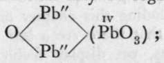
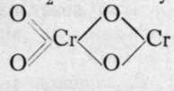
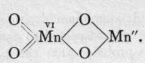

Spinels
Description
This section is from the book "Modern Chemistry", by William Ramsay. Also available from Amazon: Modern Chemistry: Theoretical and Modern Chemistry (Volume 2).
Spinels
A considerable number of compounds, analogous to the aluminates, is produced in this way, and many of them are found in nature as minerals. To this class belong the 14 spinels," so called because one of their number, the native aluminate of magnesium, had received this name. Viewed as a combination of oxides, such compounds possess the general formula M2O;,.MO, and they can be prepared by heating the sesquioxide (a name given to oxides when the proportion between the metal and the oxygen is as one to one and a half, or, more correctly, as two to three) with the monoxide. The spinels all crystallise in regular octahedra; they are therefore said to be isomorphous with each other. Viewed as aluminates, they may be written M"(MO2)2 ; compare NaA1O2. Among them are true spinel, Mg(A1O2)2; franklinite, Zn(FeO2)2; chrysoberyl, Be(A1O2)2; and chromite, or "chrome-iron ore," Fe(CrO2)2. But it is not necessary that the metals of a spinel should be different ones; if a metal is capable of existing in two forms, e.g. as dyad and triad, it may form a similar compound. Such are magnetite, or "magnetic iron ore," Fe"(Fe"'O2)2, and hausmanite, Mn"(Mn"'O2)2, the first atom of iron or manganese being dyad, like magnesium, and the second triad, like aluminium.
Reasoning by analogy, it would appear not unlikely that native oxides, such as alumina (corundum, ruby, sapphire), or iron sesquioxide (haematite), may be in reality an aluminate of alumina, A1(A1O0)3, or ferric ferrite,
Fe(Fe0*)3- r . "...
A common test for zinc and aluminium is to heat together before the blow-pipe the salt suspected to contain the metal with cobalt nitrate; it is probable that the green colour produced by zinc is due to the formation of a cobalt zincate, Co(ZnO2), and the blue colour shown by alumina to a similar body, Co(A1O2)2.
When lead is heated to redness in air the first product of its oxidation is litharge, PbO ; on continuing the application of heat, at a carefully regulated temperature, the yellow litharge becomes red, and the product of the action is minium or " red lead," Pb3O4. Now, on treating red lead with dilute nitric acid, lead nitrate dissolves, while lead dioxide, hydrated, remains as an insoluble residue. Red lead, therefore, may be regarded as a compound between two molecules of monoxide and one of dioxide, 2PbO + PbO2; the former reacts with nitric acid forming the nitrate, while the latter remains. Now, if the dioxide be heated with caustic potash it dissolves, forming potassium plumbate, K2PbO3; and red lead mav be regarded as a basic plumbous plumbate,  "basic," because the first written atoms of lead are partly oxide, partly salt; they are dyad, while the second atom of lead is tetrad.
It is possible to regard nitric peroxide in this light as a nitrate of nitrosyl, 0=N-NO3 ; but its easy decomposition into NO2 when heated militates against the view. Compounds of antimony and bismuth, having the formulae Sb2O4 and Bi2O4, may be similarly regarded as 0=Sb(SbO3) and 0=Bi(BiO3) ; of this, however, there is no proof.
Manganese and chromium also form " dioxides," to which the simple formulae MnO2 and CrOQ are usually attributed ; they, too, may be written and They would then be termed chromous chromate and manganous manganate. Such ideas must be regarded as speculative, but there can be little doubt that the formulae are more complex than they are usually written. The former is a snuff-coloured powder, produced by the action of nitric oxide on a chromate ; the latter, formed by oxidising and precipitating a manganous salt simultaneously, is best prepared in a hydrated state by the action of a hypobromite on a manganous salt: MnCl2.Aq 4-NaOBr.Aq-t-2NaOH.Aq = 0=Mn(OH)2 + NaBr. Aq + 2NaCl.Aq. It is a common black mineral in the anhydrous state, and is known as pyrolusite. It will be remembered that the ordinary method of preparing chlorine is to heat this mineral with dilute hydrochloric acid, and also that on heating alone it furnishes oxygen, being itself converted into Mn3O4, a brown powder, which may be formulated as a spinel, viz. (0=Mn-0)2=Mn.
*In concluding this chapter on neutral oxides, it may be mentioned that there are a few which, acting generally as feeble bases, yet display feebly acid properties if in the presence of a strong base like soda or potash. Such are the oxides of gold, the metals of the platinum group, and of titanium, zirconium, and thorium. The chlorides of these elements are soluble in water, as also the sulphates and nitrates of the last three. Sulphates of gold and platinum, however, are hydrolysed by water, giving oxides and sulphuric acid,thus: Pt(SO4)2 + 2HOH = PtO2 + 2H2SO4.
Salts of these elements, on treatment with soda, yield no precipitate, for they are dissolved by the alkali; the compounds formed are indefinite, but it may be supposed that they contain aurate, MAuO2.Aq, or platinate, titanate, zirconate, or thorate, MPtO3.Aq, etc. Iron and calcium titanates occur native; FeTiO3 is termed ilmenite, and CaTiO3 perowskite. The first is isomorphous with and crystallises along with native ferric oxide ; the ore is known as " titanic iron ore." It is the commonest compound of titanium.
Continue to: